Opening. This is a technical deep dive on Microsoft Purview. Conceptual, logical, physical, then the integrations and the AI path. Every claim comes from Microsoft sources.
Slide 1: Blueprint
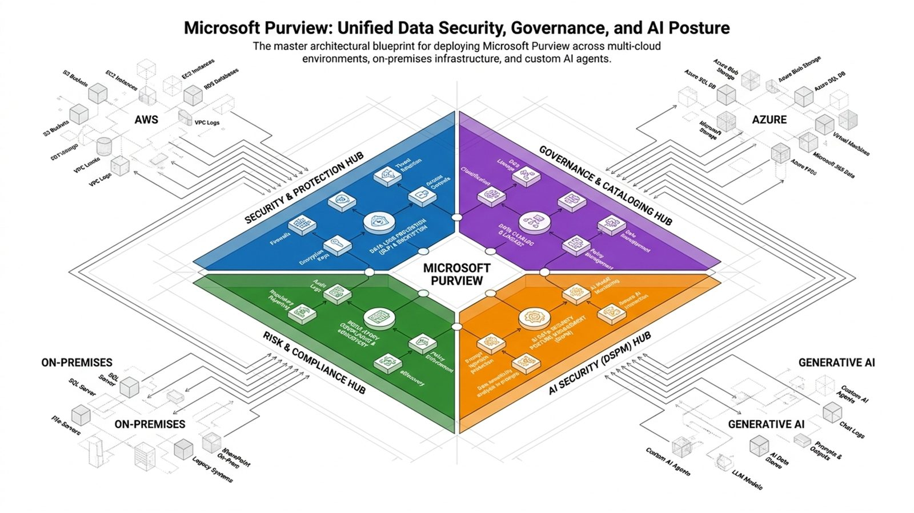
This is the whole platform on one page. Four hubs sit at the center: security and protection, governance and cataloging, risk and compliance, and AI security. Around them are the estates Purview reaches into: other clouds, on-premises stores, and generative AI apps.
Slide 2: Why now
AI moves sensitive data faster. Copilot and agents can only respect the labels and policies that already exist.
Example: An unlabeled merger file is just another grounding source.
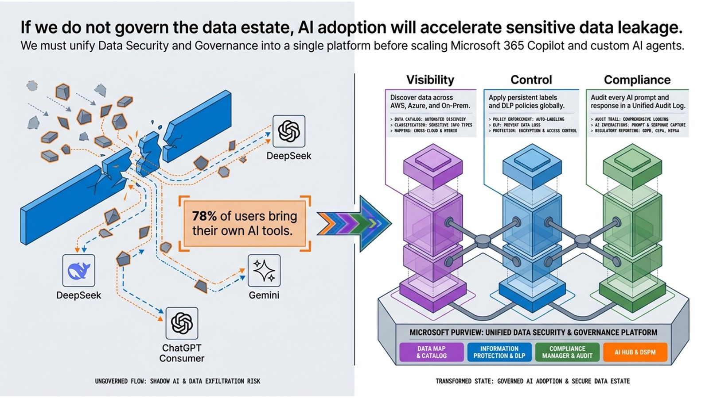
The case is simple. AI moves sensitive data faster than older controls can follow. Microsoft frames the answer as visibility, control, and compliance on one platform, in place before Copilot and custom agents scale.
78% of users bring their own AI tools - not in the source ledger; not narrated
Slide 3: Boundary
Data Map, protection, DSPM, audit log. Knowing what sits outside tells you what needs a connector.
Example: OneTrust arrives through Sentinel, not a native connector.
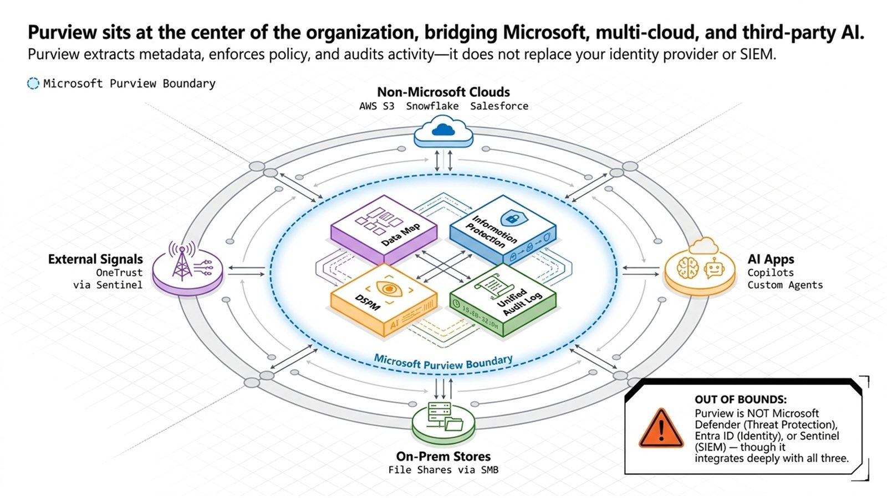
Draw the boundary first. Inside it sit the Data Map, Information Protection, DSPM, and the unified audit log. Outside it are other clouds, on-premises file shares, OneTrust signals arriving through Sentinel, and the AI apps. Purview is not Defender, Entra, or Sentinel. It works with all three.
Slide 4: Outcomes
Know, protect, govern, comply, secure AI. Each outcome maps to one solution family and one owner.
Example: The data steward owns governance. The security analyst owns AI risk.
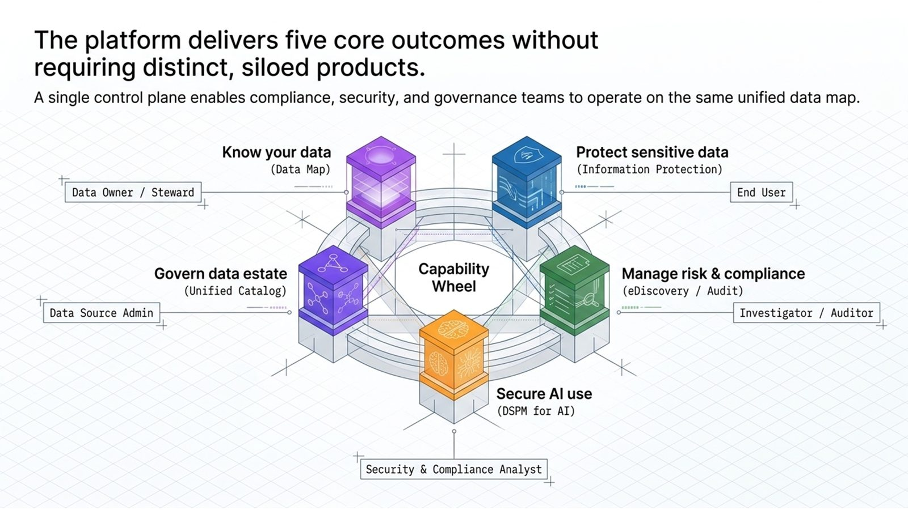
Microsoft states five outcomes: know your data, protect it, govern the estate, manage risk and compliance, and secure AI use. Each one has an owner, from the data steward to the security analyst.
Slide 5: Logical
Metadata and classifications. It decides what crosses the boundary back to Microsoft.
Example: An S3 scan returns metadata and classification only, never file contents.
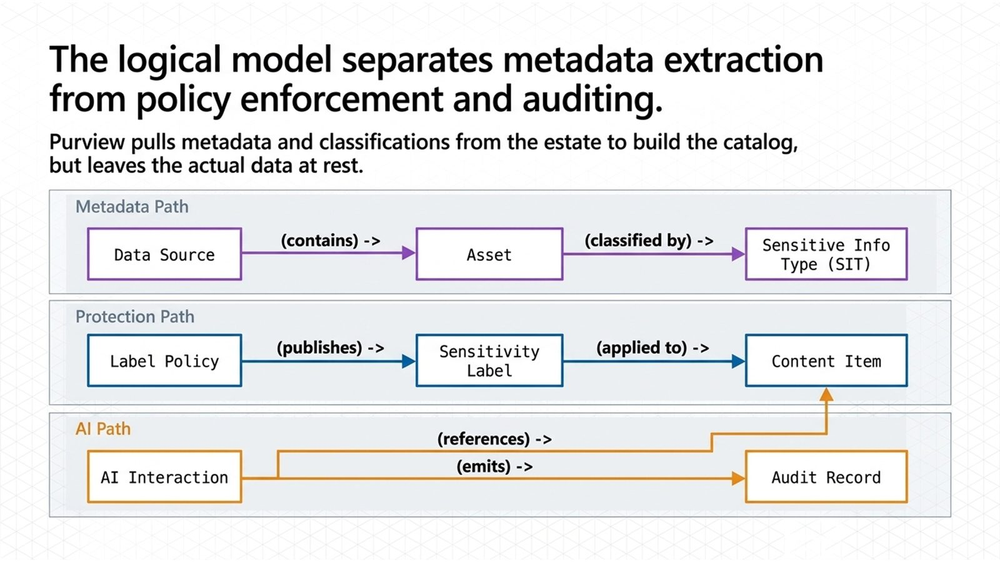
The logical model has three paths. Metadata: a data source contains assets, and classifiers tag them. Protection: a label policy publishes labels that land on content. AI: every interaction emits an audit record and references the content it touched.
Slide 6: Engine
One classify, label, and DLP path. A policy you write once applies to scans, users, and prompts.
Example: The same sensitive information type fires on a file share and in a Copilot prompt.
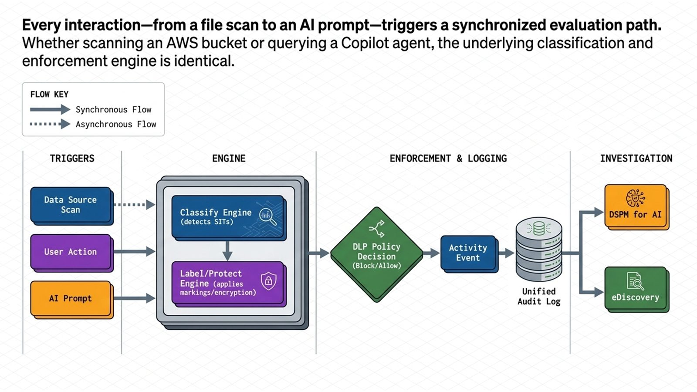
Every trigger meets the same engine. A scan, a user action, or an AI prompt is classified, labeled, and checked against data loss prevention. The result lands in the unified audit log, where DSPM for AI and eDiscovery pick it up.
Slide 7: Physical
Scanners and integration runtimes. Everything else is Microsoft's cloud, so your footprint is small, but it matters.
Example: The scanner needs Windows Server, SQL Server, and an Entra-synced service account.
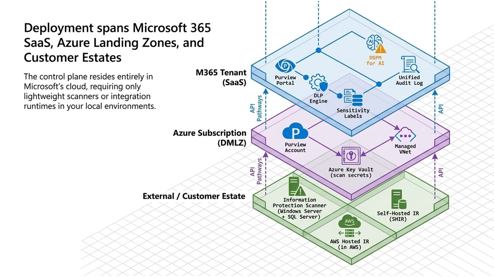
Physically there are three layers. The Microsoft 365 tenant holds the portal, data loss prevention, labels, and the audit log. An Azure subscription holds the Purview account and Key Vault, and Microsoft recommends a dedicated data management landing zone, one per tenant. Your estate runs only scanners and integration runtimes.
Slide 8: Runtimes
Only a self-hosted one. The wrong runtime is a common reason a scan never connects.
Example: Salesforce with trusted IP ranges needs the self-hosted runtime's address allowed.
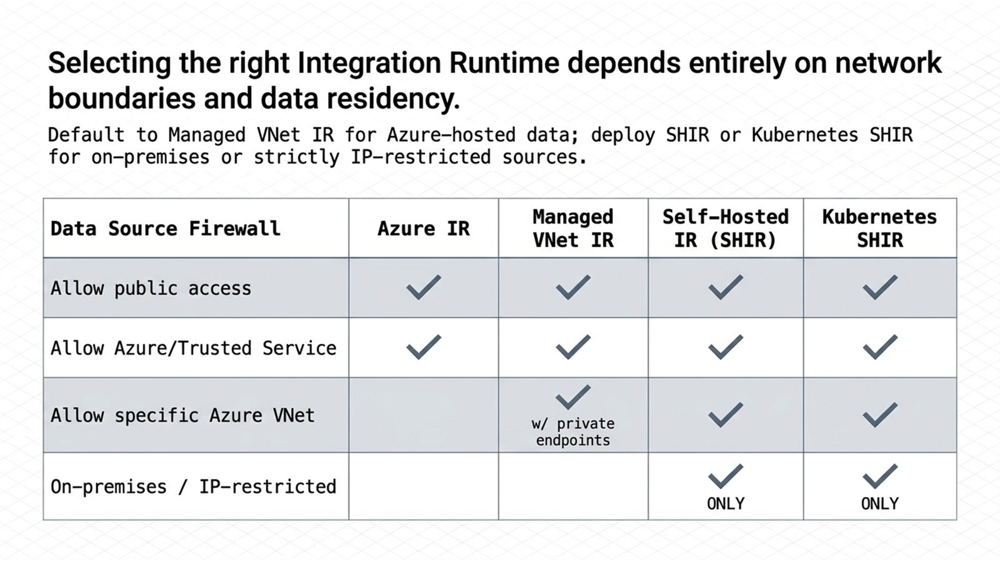
Pick the integration runtime by network reachability. The Azure runtime reaches public endpoints. The managed virtual network runtime adds private endpoints. For on-premises or IP-restricted sources, you need a self-hosted runtime.
Slide 9: Third party
A runtime plus the system's own authentication. Authentication is where these connections break.
Example: Snowflake basic authentication is being retired, so move to key pair.
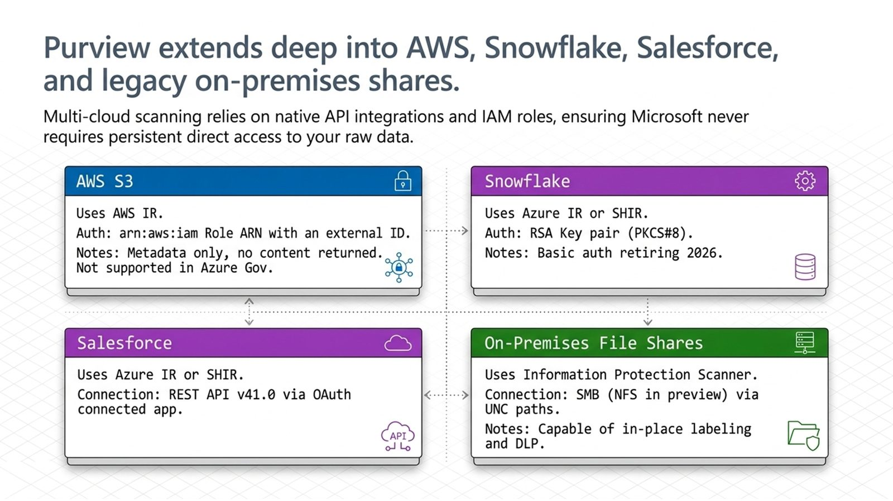
Four third-party connections. S3 goes through an AWS-hosted runtime and an IAM role with an external ID, returns metadata and classification only, and is not supported in Azure Government. Snowflake uses key-pair authentication. Salesforce uses its REST API. File shares use the Information Protection scanner, which can label in place.
Slide 10: AI path
Labels and DLP on the grounding data. Agents inherit their parent app's protections. They add none of their own.
Example: Unlabeled content is not restricted just because an agent reads it.
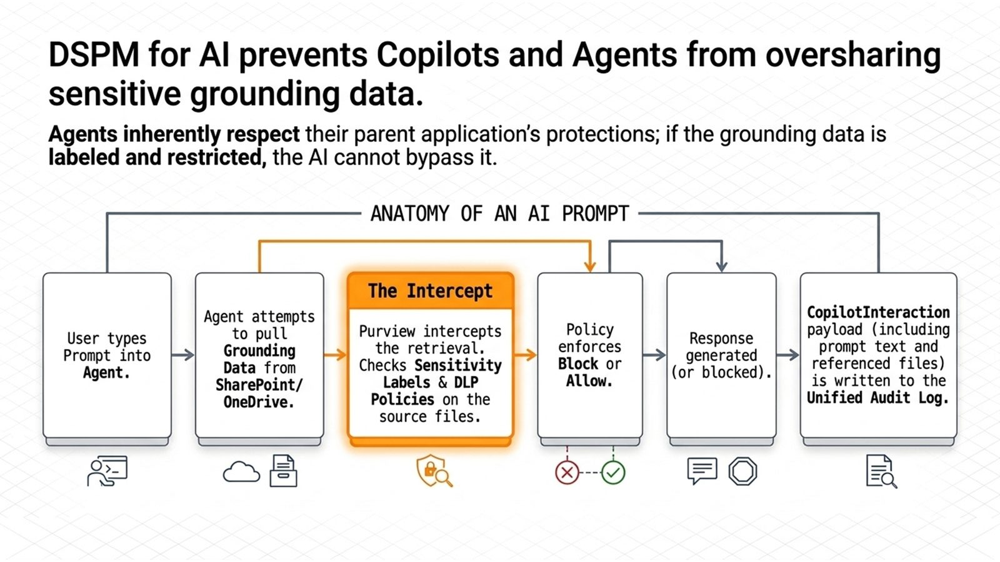
Here is the AI path. A prompt pulls grounding data. Agents inherit their parent app's protections, so labels and data loss prevention decide what comes back. The interaction is written to the unified audit log. For Copilot Studio agents, the audit keeps a thread ID, and DSPM for AI retrieves the text.
'Purview intercepts the retrieval' - sources say agents inherit parent-app protections; narrated that way
Slide 11: OneLake
OneLake, through approved paths. Direct application connections create copies the platform cannot govern.
Example: Mirror SAP or Oracle into OneLake instead of querying them directly.
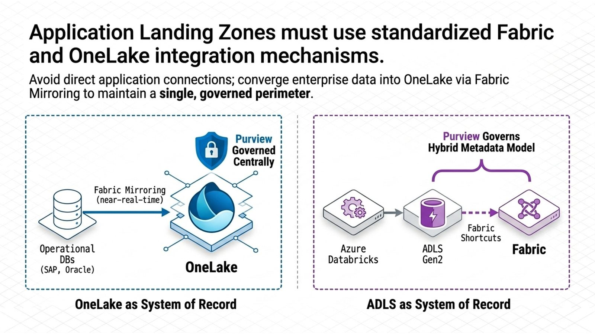
Microsoft's landing zone guidance puts governed data in OneLake, fed by Fabric mirroring, with Azure Data Lake sources registered in Purview. Applications reach data through approved Fabric and Foundry paths, not direct connections.
Slide 12: Gov clouds
Feature gaps you design around. A design that works in commercial can fail in Azure Government.
Example: S3 scanning is not supported by the Data Map in Azure Government.
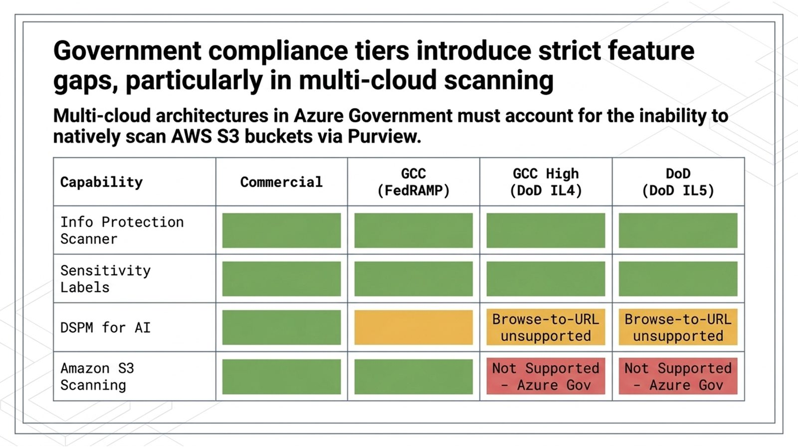
The government clouds change the design. The scanner and sensitivity labels are available in GCC, GCC High, and DoD. DSPM for AI in GCC High and DoD cannot create browse-to-URL policies. And the Data Map in Azure Government cannot scan S3.
GCC High = IL4 and DoD = IL5 split, and S3 gap shown on M365 columns - sources say both support IL4/5; S3 gap is the Azure Government Data Map
Slide 13: Failures
A symptom, and the control that catches it. Knowing the tell shortens the outage.
Example: A KMS-encrypted bucket fails to scan until the role gets KMS Decrypt.
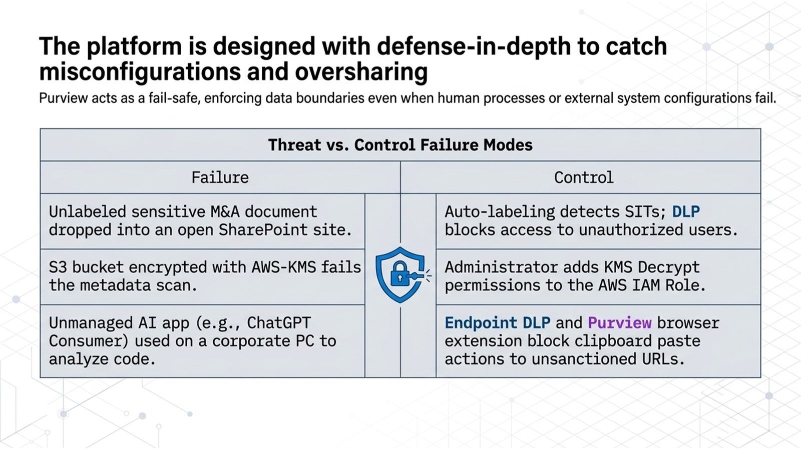
Failure modes come with controls. Auto-labeling and data loss prevention catch an unlabeled sensitive file. A KMS-encrypted bucket needs KMS Decrypt on the IAM role. Endpoint data loss prevention and the browser extension watch what users paste into unmanaged AI sites.
Slide 14: Traceability
Policy, block, audit record. Auditors ask for the trail, not the policy.
Example: In the Audit solution, filter to Copilot activities, then open the interaction in activity explorer.
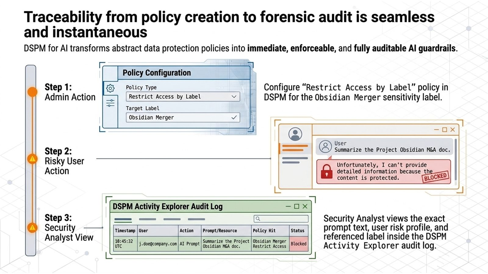
This slide traces one example end to end: a label-based policy, a blocked prompt, and the record an analyst sees in activity explorer. The policy and label names are illustrative. In practice, allow at least a day for DSPM for AI reports to fill.
'seamless and instantaneous' and the 'Obsidian Merger' policy - illustrative; DSPM for AI needs about a day for data
Slide 15: Next steps
Name it before you commit. An unverified dependency is a risk, not a plan.
Example: OneTrust government-cloud support has no Microsoft source yet.
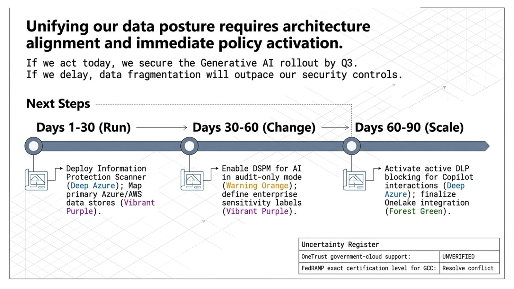
The deck ends with a thirty, sixty, ninety day plan and an uncertainty register. Two items stay open. OneTrust government-cloud support is unverified, and Microsoft's own sources disagree on the FedRAMP level for GCC.
'secure the rollout by Q3' and the 30/60/90 plan - deck opinion, not sourced
Recap
We drew the boundary, named the five outcomes, followed the metadata, protection, and AI paths, placed them in Microsoft's cloud and in your estate, and checked what changes in the government clouds.
Close
Thank you. Draw the three views from memory. If you can, you have it.
Watch the cut on the Deck and deep-dive cut page.